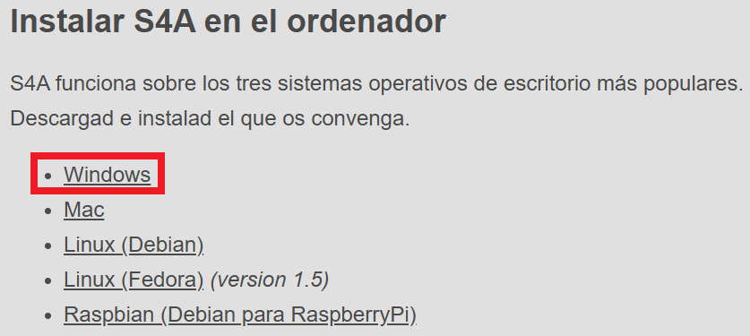
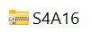
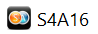
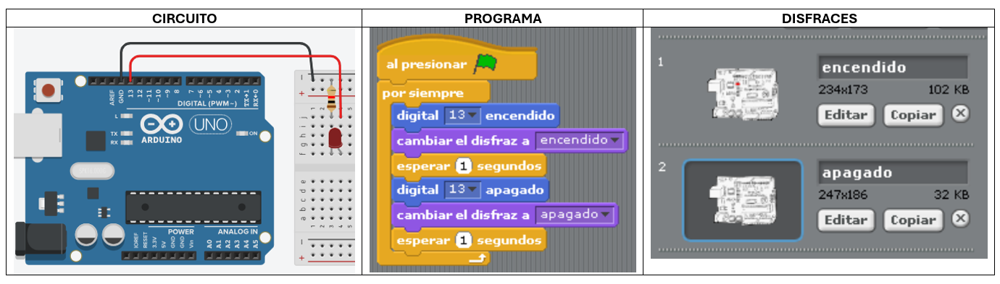

¿Qué es S4A?
Scratch for Arduino, es una versión modificada del lenguaje de programación visual Scratch, diseñada para interactuar con la placa Arduino. Permite a los usuarios controlar componentes electrónicos conectados a Arduino, como sensores y actuadores, mediante bloques de código visuales similares a los de Scratch, facilitando el aprendizaje de la programación y la electrónica.
Principales características de S4A:
- Interfaz gráfica tipo Scratch: S4A utiliza una interfaz visual basada en bloques, similar a la de Scratch, lo que facilita la programación para principiantes.
- Programación de Arduino: Permite controlar los pines de entrada y salida de la placa Arduino, así como sus sensores y actuadores.
- Bloques específicos para Arduino: S4A incluye bloques especializados para interactuar con la placa Arduino, como lectura y escritura de pines digitales y analógicos, control de motores, etc.
- Conexión con la placa Arduino: S4A se conecta a la placa Arduino a través de un cable USB, permitiendo la comunicación entre el ordenador y la placa.
- Panel de sensores: S4A cuenta con un panel de sensores que muestra el estado de las conexiones de la placa Arduino.
- Facilita la creación de proyectos: S4A permite crear proyectos interactivos que involucran tanto la programación como la electrónica.
- Entorno educativo: S4A es una herramienta muy utilizada en educación para enseñar conceptos de programación y electrónica de forma divertida y práctica.
Instalación de S4A:
- Abrir la página http://s4a.cat/index_es.html
- Hacer cic en el enlace Windows: 
- Observarás en la carpeta de descargas el archivo . Haz clic derecho sobre el ícono y selecciona Extraer todo....Luego, aparece un cuadro de diálogo para indicar la ubicación de la carpeta de extracción, pulsa el botón Extraer.
- Abrir el icono de la aplicación . Pulsar Si para permitir la instalación, luego seleccionar el idioma Español y seguir los pasos del instalador.
Una vez abierto el programa, puedes conectar tu placa Arduino UNO y comenzar a armar y programar tus circuitos.
Ejercicio 1: Blink LED en S4A
Programa en S4A un LED que parpadee cada 1 segundo utilizando el pin digital 13 de la placa Arduino UNO. En el escenario, utiliza dos disfraces para representar el estado del LED: encendido y apagado, de manera que el cambio se muestre en pantalla al mismo tiempo que en la placa.
Actividad:
Dentro de la carpeta S4A que creaste en la actividad anterior, crear un documento de Google con las respuestas a las siguientes consignas:
- ¿Qué es S4A?
- Describir los principales elementos de la interfaz de S4A (con imagen).
- ¿Qué pines de la placa Arduino UNO utiliza S4A como entradas y salidas? Explica para qué sirve cada tipo de conexión (puedes identificar los pines en una imagen de a placa).
Recuerda colocar en el encabezado del documento Curso e integrantes; también colocar las fuentes de consulta al final. Fecha limite de entrega: cuarta semana de agosto.
Importante: Este trabajo será considerado en la evaluación individual de la segunda semana de septiembre.